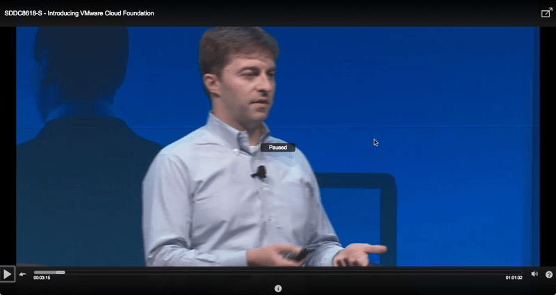

VMworld 2016 - Sessões da VMworls 2016 disponíveis para acesso e download - Grátis para todo mundo
VMworld 2016Compartilhe esse post nas redes sociais...
[caption id="attachment_1851” align="aligncenter” width="800”] Homelaber Brasil - Blog Oficial da VMworld 2016[/caption]
Olá Homelabers!
Ao contrário dos outros anos, a **VMware **(@VMware) já liberou as gravações das sessões da VMworld 2016 (@VMworld).
Isso é muito legal, pois eu devo ter assistido 2-3 sessões técnicas na VMworld, agora eu e você podemos assistir TODAS as sessões “no conforto de nossos lares”:D
O link para acessar o site é esse: http://www.vmworld.com/en/sessions/2016.html. Basta fazer um cadastro simples e pronto! E eu falei que é grátis? :)

E tem mais, o Willian Lam(@lamw) do blog virtuallyGhetto (@vGhetto) publicou os links diretos para todas as sessões e também um script para fazer o download das sessões.
O script e os links estão no Github. Eu fiz um fork do repo do Lam no git do Homelaber. Link aqui: https://github.com/homelaber/vmworld2016-session-urls
https://twitter.com/vGhetto/status/773880358605582336

Lista das Sessões Mais Populares (13)
Só clicar no link e assistir.
INF9047 - Managing vSphere 6.0 Deployments and Upgrades
INF8225 - The vCenter Server and Platform Services Controller Guide to the Galaxy
INF9044 - Journey to the vCenter Server Appliance: A Migration Story
MGT7924 - vRealize Operations Capacity Explained
CTO9943 - VMware Chief Technology Officer Panel - Trends and Futures
CTO7516 - Ask the Experts - Titans of Tech
SDDC8468 - A Beginner’s Guide to the Software-Defined Data Center
EUC8203 - Beyond the Marketing: Horizon Instant Clones Deep Dive
INF8755R - Troubleshooting vSphere 6: Tips and Tricks for the Real World
INF8089 - Extreme Performance Series: vSphere Compute and Memory
CNA7522 - Containers for the vSphere Admin
INF8430 - vSphere 6.x Host Resource Deep Dive
EUC8243R - Troubleshooting 101 for Horizon
SDDC9461-SPO - Veeam Availability Suite 9.5 Deep Dive
NET7907 - Advanced Network Services with NSX
NET8364R - How to Deploy VMware NSX with Cisco Infrastructure
INF8092 - The Power Hour: Deep Dive, DevOps, and New Features of PowerCLI
VIRT8290R - Monster VMs (Database Virtualization) Doing IT Right
EUC8404 - What’s New with Horizon 7
MGT7718 - The KISS of vRealize Operations!
VIRT7621 - Virtualize Active Directory, the Right Way!
NET9989-S - NSX - The Network Bridge to the Multi-cloud Future
INF8036 - Enforcing a vSphere Cluster Design with PowerCLI Automation
INF9083 - Ask the vCenter Server Experts Panel
STO7645 - Virtual Volumes Technical Deep Dive
INF8038 - Getting Started with PowerShell and PowerCLI for Your VMware Environment
STO9424-S - Taking HCI Mainstream
EUC7601 - Advances in Remote Display Protocol Technology with VMware Blast Extreme
Parabéns a @VMware pela decisão de liberar o conteúdo para TODOS e também ao time da VMworld (@VMworld), pois não é fácil produzir e compartilhar essa quantidade ENORME de conteúdo em tão pouco tempo. E parabéns ao @lamw por criar o script.
Em resumo, ta ai… se você não pode ir a VMworld ou se não conseguiu assistir “aquela” sessão, agora não tem mais desculpas :)
Um abraço
VC
Compartilhe esse post nas redes sociais...Valdecir Carvalho
Nerd e pai orgulhoso da Mariana e João. Profissional Sênior de TI com foco em arquitetura de infraestrutura e cloud computing. Blogueiro, podcaster, palestrante, amante de comunidades técnicas, fotógrafo aposentado e adora jogos antigos.
#vExpert · #VMUGLeader · #VUGBrasil · #vBronwBagBrasil · #VeeamVanguard